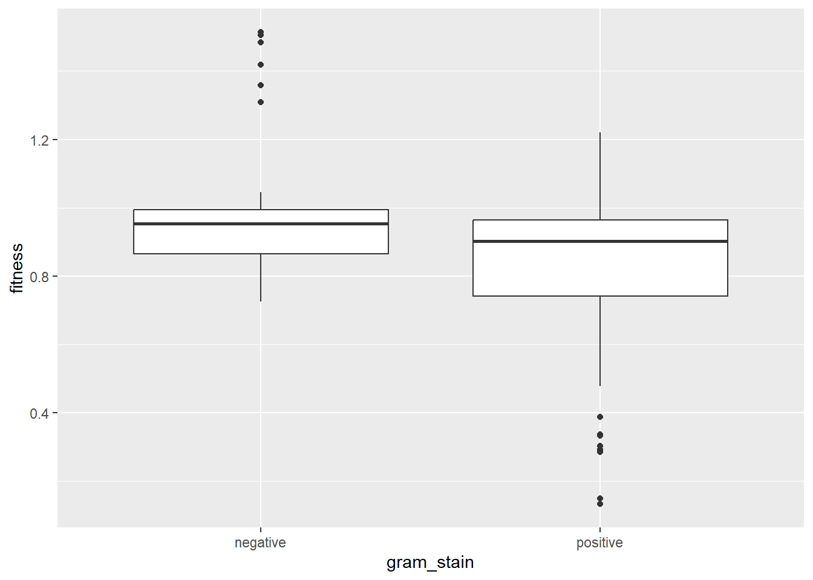

Chapter 5 Chapter 3:Analysis
The analysis surveyed the distribution of the numeric variables and their relationships. The principle goal of the analysis was to study the effects of antibiotic resistance gene mutations on the fitness of Staphylococcus aureus. This analysis will contribute to the development of a computer model to study the effects of antibiotic resistance on the growth of Staphycococcus aureus in blood.
5.1 Ranges of Numeric Variables.
library(tidyverse)
p <- costR %>%
select(fitness) %>%
ggplot(mapping = aes(x = fitness))+
geom_histogram(binwidth = 0.01)+
labs(title = "Range of Fitness Values")+
theme()
p1 <- ggplot(data = costR, mapping = aes(x = SE))+
geom_histogram(binwidth = 0.01)+
labs(title= "Range of SE values")+
theme_classic()
p2 <- ggplot(data = costR, mapping = aes(x = Selection_coefficient))+
geom_histogram(binwidth = 0.01)+
labs(title="Range of Selection coefficient values",
x = "Selection Coefficient")+
theme_bw()
p3 <- costR %>%
select(MIC) %>%
ggplot(mapping = aes(x = MIC))+
geom_histogram(bins = 15)+
labs(title = "Range of Minimum Inhibitory Concentration values")+
scale_fill_viridis_d(option = "magma")
p
## Warning: Removed 51 rows containing non-finite outside the scale range
## (`stat_bin()`).## Relationship between Numeric Variables The relationship between the numeric variables of 1)fitness, 2)SE and 3)Selection_coefficient are studied using 4 different methods or graphing techniques.
5.2 Scatter plot:
Third variable expressed with color or size Encoding. The x and y axis encodes two of the three variables. Color or size is used to represent the third variable.
5.3 Pair Plot (Scatter plot Matrix):
The ‘GGally’ package is used to create a scatter plot matrix to visualize pairwise relationships between multiple variables.
5.5 Fitness Ranges:
Ranges of fitness values and assign to general categories. Encode the results in a table using the ‘gt()’ package.
| Fitness Groups | ||
| Group | Number of organisms | Percentage |
|---|---|---|
| Most Fit of All | 5 | 2.793 |
| Highly Fit | 1 | 0.559 |
| Fit | 22 | 12.291 |
| Less Fit | 118 | 65.922 |
| Much Less Fit | 24 | 13.408 |
| Least Fit of All | 9 | 5.028 |
5.6 Staphycococcal aureus.
The cell wall is an important target of mutations that confer antibiotic resistance. The bacterial cell wall is built with alternating monomers of N-Acetylglucosamine and n-Acetylmuramic acid forming the peptidoglycan of the cell wall. Staphycococcus aureus and other gram positive organisms have a much greater amount of peptidoglycan in the cell wall. This biochemical difference in cell wall structure suggests that there could be a significant difference in fitness costs between gram positive and gram negative organisms.
| Differences in fitness based on gram stain | |||||
| Gram stain | Mean Fitness | Interquantile Range | Minimum | Maximum | Standard Deviation |
|---|---|---|---|---|---|
| negative | 0.9733961 | 0.1294500 | 0.725 | 1.5134 | 0.1678243 |
| positive | 0.8224603 | 0.2226997 | 0.133 | 1.2200 | 0.2154585 |
## # A tibble: 2 × 6
## gram_stain mean_fitness IQR Minumum Maximum Standard_deviation
## <chr> <dbl> <dbl> <dbl> <dbl> <dbl>
## 1 negative 0.973 0.129 0.725 1.51 0.168
## 2 positive 0.822 0.223 0.133 1.22 0.215Gram-positive bacteria had a significantly greater fitness costs associated with resistance mutations (mean fitness = 0.822) when compared with Gram-negative bacteria (mean fitness = 0.973). Caution must be used in interpreting this result because there were a greater number of Gram-negative than Gram-positive bacteria in the data set.

A boxplot of fitness between gram + and gram - organisms does not show much of a difference between the two groups.
5.7 Antibiotic class and fitness
costR %>%
select(antibioticClass, fitness) %>%
group_by(antibioticClass) %>%
summarise(mean_cost = mean(fitness),
stddev = sd(fitness, na.rm = TRUE),
meansd_l = mean_cost - stddev,
meansd_u = mean_cost + stddev) %>%
ggplot(mapping = aes(x= mean_cost, y = antibioticClass))+
geom_point()+
geom_vline(xintercept = 1)+
geom_errorbar(mapping = aes(xmin = meansd_l, xmax = meansd_u))+
labs(x = "Mean Fitness Cost", y = "Antibiotic Class")+
ggtitle("Fitness Cost each Antibiotic Class")The dihydrofolate reductase inhibitors appear to be either cost-free or the costs are so small they cannot be detected by the assay techniques used in this study.
5.8 Relative Fitness:
Relative fitness and 95% CI of antibiotic Resistance mutation associated with a specific antibiotic, Fitness cost < 1 indicates less fit and Fitness Cost > 1 associated with more fit.
The antibiotic Trimethoprim has mean fitness of cost of greater than 1, indicating that the gene mutation that creates resistance to Trimethoprim does not negatively impact microbial fitness. Trimethoprim is a member of the drug class dihydrofolate reductase inhibitors. This finding correlates with the graph of fitness and drug class.
Resistance mutations in two species, Enterococcus faecium and Borrelia burgorferi, showed no evidence for a fitness cost. Other bacteria species had a fitness cost to Mean relative fitness and 95% CI of antibiotic resistance mutation associated with a given bacteria Fitness cost < 1 indicates less fit.
5.9 Heat Map:
Create a heat map with antibiotic and bacteria as the two categorical variables and fitness as a numeric variable.
## `summarise()` has grouped output by 'bacteria', 'antibioticType'.
## You can override using the `.groups` argument.Analysis of Staph aureus gene mutations How many Staph aureus gene mutations associated with fitness is < 1, indicating less fit?
## n
## 1 44How many Staph aureus gene mutations associated with fitness is > 1, indicating improved fitness?
## n
## 1 5There are 5 gene mutations in Staph aureus associated with improved microbial fitness and 44 gene mutations associated with a decrease in fitness.
What are the gene mutations associated with a decrease and increase in microbial fitness.
BacterialessFIT <- costR %>%
select(bacteria, gene_mutation, fitness) %>%
filter(bacteria == "S. aureus" & fitness < 1.0) %>%
distinct(gene_mutation) %>%
rename("Gene Mutation" = gene_mutation)
BacterialessFIT## Gene Mutation
## 1 rpoB V1080I
## 2 rpoB V1080L
## 3 rpoB E1084K
## 4 rpoB D1101E
## 5 rpoB S1127L
## 6 rpoB S1127P
## 7 rpoC K334N
## 8 rpoC T925K
## 9 rpoC T925R
## 10 rpoC G1172C
## 11 rpoC G1172D
## 12 gryB G85S
## 13 gyrB R144S
## 14 gyrB T173I
## 15 DHFR H150R
## 16 EF-G A67T
## 17 EF-G P406L
## 18 EF-G S416F
## 19 EF-G H457Y
## 20 grlA S80F
## 21 grlA S80Y
## 22 rpoB N471Y
## 23 rpoB N471Q
## 24 rpoB N471G
## 25 rpoB I527F
## 26 rpoB S464P
## 27 rpoB N474K
## 28 rpoB A477V
## 29 rpoB A477N
## 30 rpoB R484H
## 31 rpoB S486L
## 32 rpoB Q468R
## 33 rpoB Q468L
## 34 rpoB H481Y
## 35 rpoB D471E
## 36 rpoB Q137L
## 37 rpoB L466S
## 38 rpoB H481N
## 39 rpoB deltaL485
## 40 rpoB D471Y
## 41 rpoB L488S
## 42 rpoB P519L
## 43 rpoB A477D
## 44 rpoB H481DBacteriaMoreFit <- costR %>%
select(bacteria, gene_mutation, fitness) %>%
filter(bacteria == "S. aureus" & fitness > 1.0) %>%
distinct(gene_mutation) %>%
rename("Gene Mutation" = gene_mutation)
BacteriaMoreFit## Gene Mutation
## 1 DHFR L41F
## 2 DHFR F99S
## 3 DHFR F99Y
## 4 grlA E84K
## 5 grlA A116EThree of the five gene mutations that are associated with improved fitness and mutations in the gene that codes for the dihydrofolate reductase inhibitor.